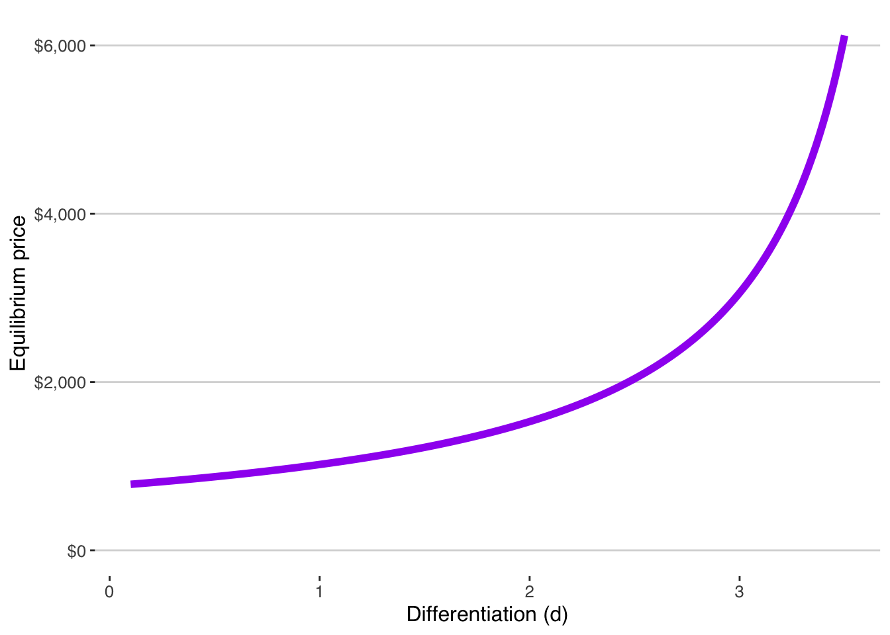
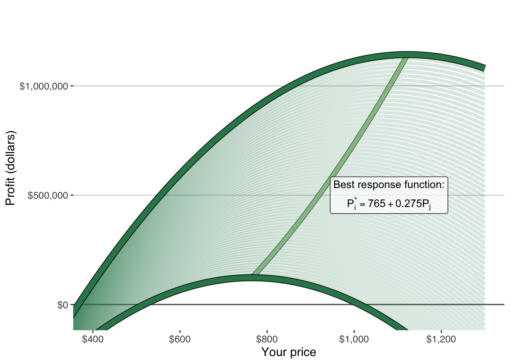
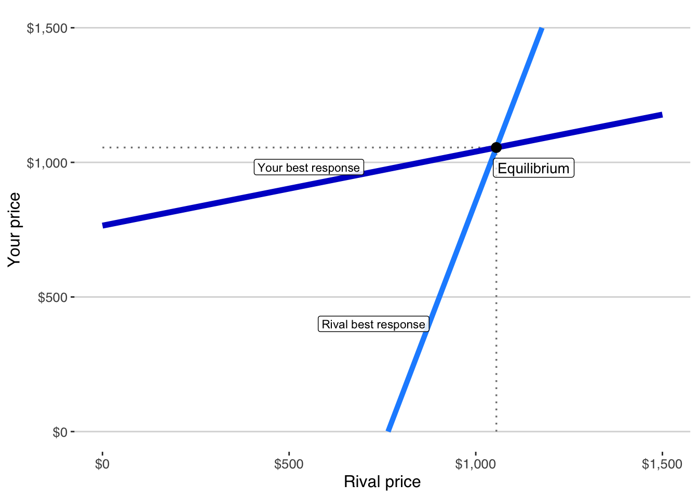

15 Differentiated Bertrand Competition
How differentiation preserves margin under rivalry
In the previous chapter, we saw what happens when products are indistinguishable.
Price collapses to cost.
Contribution margin disappears.
Profit cannot survive.
But most real markets are not perfectly undifferentiated.
Customers do not all move instantly for a one-dollar price difference.
Some prefer your brand.
Some value your service.
Some trust your delivery.
Some simply do not notice small price changes.
Differentiation does not eliminate competition. It softens it.
15.1 When Customers Do Not Switch Completely
To model differentiation, suppose demand for your product depends on both prices:
\[ \mathsf{Q_i = a - bP_i + dP_j } \]
- The term \(\mathsf{-bP_i}\) captures how your own price reduces your demand.
- The term \(\mathsf{+dP_j}\) captures how a higher rival price shifts customers toward you.
When \(\mathsf{d > 0}\), customers are not perfectly loyal—but they do not switch completely either.
Your demand responds gradually to price differences.
Profit becomes:
\[ \mathsf{\pi_i = (P_i - c)(a - bP_i + dP_j) - f} \]
This is the same profit logic as before.
But now demand shifts partially, not entirely.
15.2 From Surface to Best Response
In Chapter 13 Competition, we visualized profit as a surface.
For each rival price, there was a profit curve.
Each curve had a peak: your best price given that rival price.
If we trace the peak of every slice of that surface, we obtain a new curve.

That curve tells us: Your best price for every possible rival price.
It is your best-response function.
It describes how you optimally adjust when the rival adjusts.
15.3 The Best-Response Function
The ridge in the figure traces your optimal price for every rival price.
In this numerical example, that ridge is linear:
\[ \mathsf{P_i^* = 765 + 0.275 P_j} \]
Two things are immediately visible.
First, your best price increases when the rival raises their price.
Competition is still present.
But it is no longer destructive.
Second, the slope is less than one.
When the rival raises price by one dollar, your best price rises by only about 28 cents.
Your response is disciplined.
Not explosive.
Differentiation softens rivalry.
In general, with demand
\[ \mathsf{Q_i = a - bP_i + dP_j}, \]
the best-response function is: \[ \mathsf{P_i^*(P_j) = \frac{a + dP_j + bc}{2b}} \]
This expression tells us several important things.
First, your best price increases when the rival raises their price.
Competition is still present. But it is no longer destructive.
Second, the strength of your response depends on the degree of differentiation.
The slope of the best-response function is:
\[ \mathsf{\frac{d}{2b}} \]
- When \(\mathsf{d}\) is small, customers do not shift much toward you when the rival raises price. Your best response is relatively flat.
- When \(\mathsf{d}\) is large, customers shift more strongly. Your pricing becomes more interdependent.
If \(\mathsf{d = 0}\) the best-response function becomes independent of the rival’s price. This moves us back toward the undifferentiated collapse of Chapter 14 When Price Competition Eliminates Profit.
Differentiation does not eliminate rivalry.
It changes the slope of response.
15.4 Mutual Best Response
So far, we have described your optimal response to a given rival price.
But the rival is solving the same problem.
By symmetry, their best-response function has the same structure:
\[ \mathsf{P_j^*(P_i) = \frac{a + dP_i + bc}{2b}} \]
Each firm adjusts optimally given the other’s price.
When we plot both best-response functions on the same axes, there is a single intersection point.

At that point:
- Your price is optimal given theirs.
- Their price is optimal given yours.
- Neither firm has an incentive to change price unilaterally.
This is a stable outcome.
Game theory calls it a Nash equilibrium.
But the logic is simpler than that: it is the price pair where both firms are doing the best they can, given what the other is doing.
15.5 Solving for the Equilibrium Price
Because the firms are symmetric, equilibrium occurs where:
\[ \mathsf{P_i^* = P_j^* = P^*} \]
Substituting into the best-response formula:
\[ \mathsf{P^* = \frac{a + dP^* + bc}{2b}} \]
and then solving, yields:
\[ \mathsf{P^* = \frac{a + bc}{2b - d}} \]
This is the equilibrium price under differentiated Bertrand competition.
A Note on Symmetry
In this chapter, we assumed the firms were structurally identical: same cost, same demand sensitivity, same degree of differentiation.
That is why equilibrium resulted in the same price for both firms.
But symmetry is not required for equilibrium.
If firms differ in cost, demand strength, or differentiation, their best-response functions shift. The intersection still determines equilibrium — but the prices need not be equal.
Chapter 16 Competitive Advantage explores what happens when firms are structurally different. That is where competitive advantage appears.
15.6 What Determines the Equilibrium Price?
Three structural forces shape the equilibrium price.
Differentiation
The denominator \(\mathsf{2b - d}\) governs competitive intensity.
- When differentiation is weak (small \(\mathsf{d}\)), the denominator is large. Price is lower.
- When differentiation is strong (larger \(\mathsf{d}\)), the denominator shrinks. Price rises.
Differentiation increases pricing power.
Cost
Higher variable cost \(\mathsf{c}\) shifts equilibrium price upward.
Demand strength
Stronger baseline demand \(\mathsf{a}\) raises equilibrium price.
Equilibrium is not arbitrary.
It is a structural consequence of demand, cost, and substitution.
15.7 Differentiation Softens Competition
Compare three structural cases:
- Monopoly without rivals (Chapter 12)
- Undifferentiated collapse (Chapter 14)
- Differentiated rivalry (this chapter)
In monopoly, price is highest.
In undifferentiated price competition, price falls to cost.
In differentiated rivalry, price lies between those extremes.
Profit survives.
But it is disciplined.
Competition is present.
Response is mutual.
Margin is determined by structure.
Differentiation does not eliminate rivalry.
It prevents collapse.
15.8 Why the Intersection Matters
Equilibrium is not cooperation.
It is not agreement.
It is not collusion.
It is simply the point where both firms are optimizing at the same time.
Each firm sits on its best-response line.
Neither can improve profit by moving alone.
That is what makes the outcome stable.
15.9 What This Means for Feasibility
Return to the core question:
Is this worth doing?
Under differentiation, profit does not disappear automatically.
But it depends on structure.
Three parameters matter:
- Differentiation (the size of \(\mathsf{d}\))
- Price sensitivity (the size of \(\mathsf{b}\))
- Variable cost (the size of \(\mathsf{c}\))
If differentiation is weak and price sensitivity is strong, equilibrium price will be close to cost.
Profit may be fragile.
A small cost disadvantage can eliminate margin.
If differentiation is meaningful, equilibrium price will be higher.
Profit can be durable.
Feasibility is no longer about finding any positive profit curve.
It is about whether structure protects margin under response.
Figure 15.3: Equilibrium price rises as differentiation (d) increases.
15.10 The Decision Lens
From this point forward, feasibility must be evaluated under response.
It is not enough to ask:
Is there a price that makes profit positive?
You must ask:
What price survives mutual optimization?
Under differentiated rivalry, profit does not disappear automatically.
But equilibrium disciplines it.
Margin is compressed relative to monopoly.
Price depends on cost, demand, and substitution.
Small structural disadvantages are exposed.
If your profit only exists because competitors are passive, you do not have a business.
You have a temporary condition.
Differentiation softens competition.
It does not suspend it.
The next question is no longer whether equilibrium exists.
It is whether your structure is strong enough to win at equilibrium.